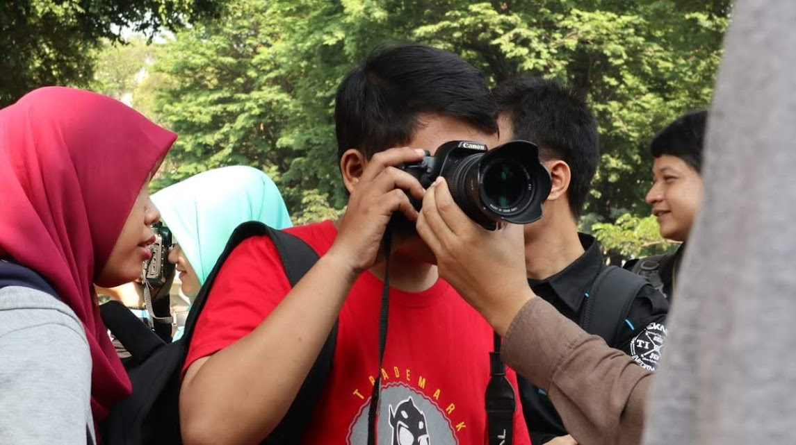
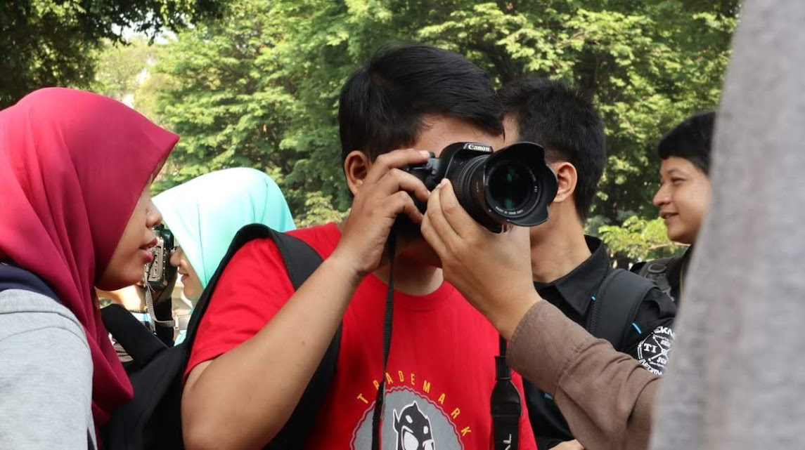

Visi
Menjadi program studi unggulan dalam bidang Film, Televisi, dan Media yang menghasilkan lulusan kreatif, kritis, dan profesional, serta mampu berkontribusi secara signifikan dalam industri media dan budaya global.
Misi
- Pengembangan Kreativitas:
Mendorong pengembangan kreativitas dan ekspresi artistik mahasiswa melalui berbagai proyek, produksi, dan kegiatan praktis di bidang film, televisi, dan media. - Pengembangan Profesionalisme:
Mengembangkan keterampilan profesionalisme dan etika kerja mahasiswa agar siap menghadapi tantangan di dunia industri film, televisi, dan media. - Penelitian dan Inovasi:
Mendukung penelitian dan inovasi yang relevan dengan industri media, serta mempublikasikan hasil penelitian di tingkat nasional dan internasional untuk berkontribusi pada pengembangan ilmu dan praktik di bidang ini. - Kerjasama dan Jejaring:
Membangun dan memperluas jaringan kerjasama dengan industri, komunitas kreatif, dan institusi pendidikan lainnya baik di dalam maupun luar negeri untuk meningkatkan kualitas pendidikan dan peluang karir mahasiswa.
 
